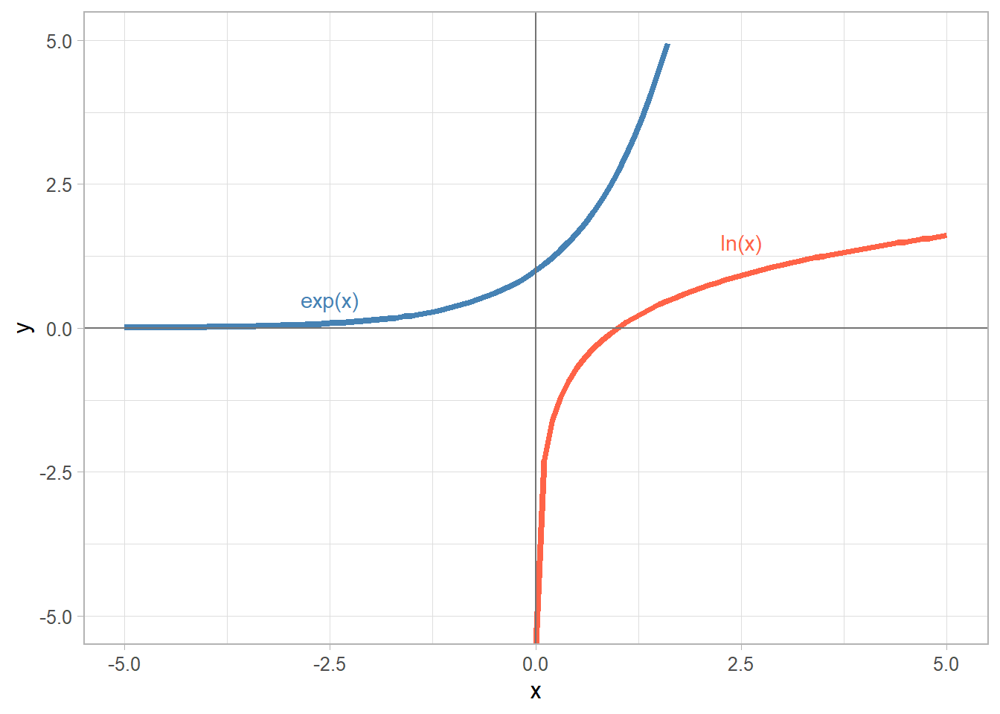
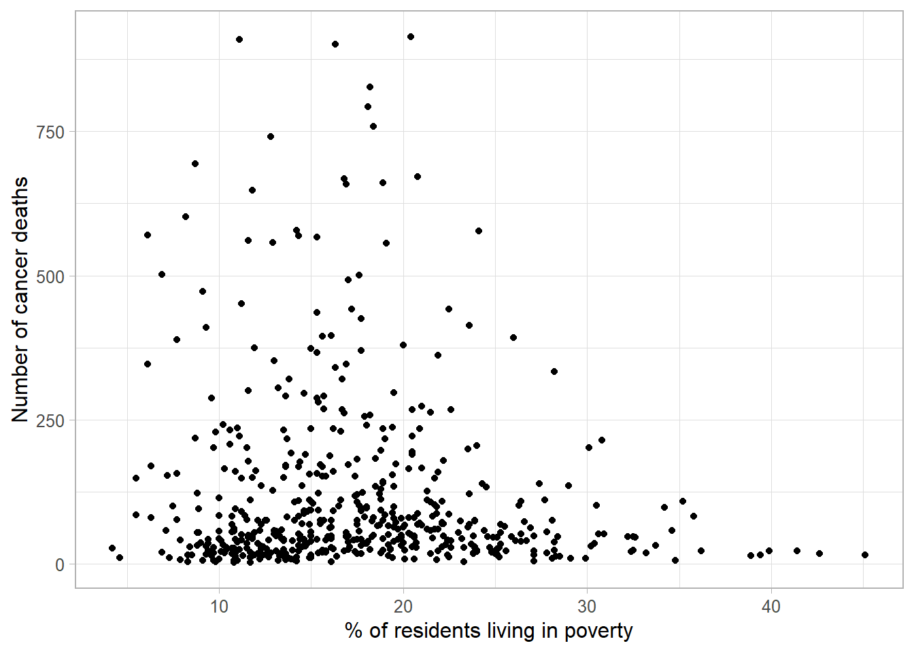
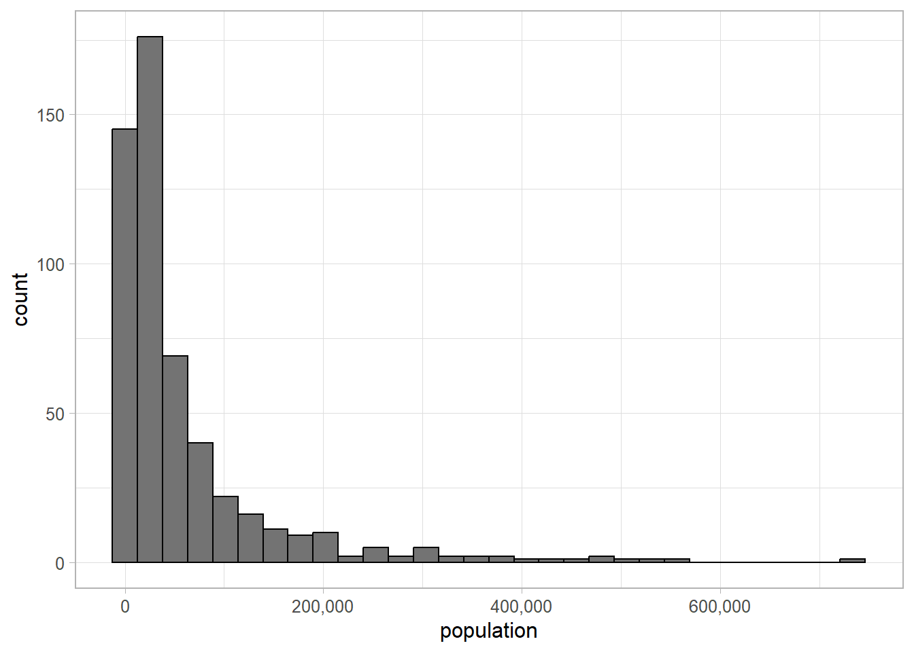

Linear regression is a powerful tool but is only appropriate where the outcome of interest is continuous and the residuals are normally distributed. However, we may be interested in answering research questions about a binary outcome, or predicting a rate based on observed variables. This is where generalised linear models (GLMs) are useful.
GLMs extend the linear regression framework to allow other types of outcomes to be modelled using a linear equation. They are appropriate to use for any outcome that is assumed to follow a distribution from the exponential family. The most commonly used GLMs are:
Linear regression: continuous outcome
Logistic regression: binary outcome
Poisson regression: count/rate outcome
Ordinal logistic regression: ordinal outcome
Multinomial regression: nominal outcome
GLM generalises the linear model framework by fitting the linear model to some transformation of the outcome. This transformation is known as the link function. Each regression type has an associated link function, \(g(Y)\), making the updated model formula:
Linear regression is the simplest form of GLMs as the link function is the identity function (\(g(Y) = Y\)). Where another link function has been used, coefficient estiamtes must be transformed to put them onto the same scale as the data before they are interpretable.
4.1 Generalised linear models in R
To fit a GLM in R, we use the glm function. The model specification is the same as the lm function but with an optional family argument where the outcome is not continuous.
We can fit the linear model from the previous section using the following code:
Gaussian distribution is another term for normal distribution.
Call:
glm(formula = body_mass_g ~ flipper_length_mm + species, family = gaussian,
data = penguins)
Coefficients:
Estimate Std. Error t value Pr(>|t|)
(Intercept) -4031.477 584.151 -6.901 2.55e-11 ***
flipper_length_mm 40.705 3.071 13.255 < 2e-16 ***
speciesChinstrap -206.510 57.731 -3.577 0.000398 ***
speciesGentoo 266.810 95.264 2.801 0.005392 **
---
Signif. codes: 0 '***' 0.001 '**' 0.01 '*' 0.05 '.' 0.1 ' ' 1
(Dispersion parameter for gaussian family taken to be 141026.6)
Null deviance: 219307697 on 341 degrees of freedom
Residual deviance: 47666988 on 338 degrees of freedom
(2 observations deleted due to missingness)
AIC: 5031.5
Number of Fisher Scoring iterations: 2
Note
For a full list of family options, open the ?family help file.
The lm and glm functions will provide the same results when fitting a linear model, although some of the output provided in the summary is slightly different (lm will provide the R-squared values by default, whereas glm provides deviance and the AIC).
4.2 Poisson regression
Poisson regression is used where the model outcome is either a count or rate. Linear regression would not be appropriate for count data as predictions could be negative or non-integer values. To overcome this, the model is fitted to a transformed version of the outcome. In theory, any mathematical function could be used as a link function as long as there is an opposite function that would return values to their original scale, making model results interpretable.
Note
We do not apply any transformation to the data, this is done by the computer when we are fitting the model. The coefficients will be estimated in relation to the log-transformed outcome rather than the original variable.
4.2.1 Logarithm and exponential transformations
The transformation applied to the outcome when fitting a poisson regression is the natural log function (also known as \(ln\) or \(log_e\) (log to the base \(e\)). The opposite of this transformation is the exponential function (sometimes written as \(exp\) or \(e\)).

The natural log function is useful when dealing with counts as it takes non-negative variables and ‘stretches’ them, allowing them to take any value between \(\pm\infty\). To return to the original data, we just apply the exponential function to the transformation:
Original values (x)
ln(x)
exp(x)
-0.5
-
-
0.0
-
-
0.5
-0.69
0.5
1.0
0
1
2.0
0.69
2
5.0
1.61
5
10.0
2.3
10
100.0
4.61
100
1000.0
6.91
1000
The exponential and natural log transformations have some interesting properties that we must be aware of before interpreting poisson regression results. This is because model results may need to be transformed before they can be interpreted.
For example, the exponential function takes an additive relationship and converts it into a multiplicative one:
\(e^{a + b} = e^a \times e^b\)
e.g., \(e^5 = e^{2 + 3} = e \times e \times e \times e \times e = (e \times e) \times (e \times e \times e) = e^2 \times e^3\)
Multiplicative relationships become exponential relationships:
\(e^{a \times b} = (e^a)^b = (e^b)^a\)
e.g., \(e^6 = e^{2 \times 3} = e \times e \times e \times e \times e \times e = (e \times e) \times (e \times e) \times (e \times e) = (e \times e)^3 = (e^2)^3\)
The natural log also has some important properties that we must be aware of during the poisson regression process:
\(ln(a+b)=ln(a) \times ln(b)\)
e.g., \(ln(8) = ln(6 + 2) = ln(6) \times ln(2)\)
\(ln(a − b) = ln(a) \div ln(b)\)
e.g., \(ln(5) = ln(9 − 4) = ln(9) \div ln(4)\)
4.2.2 Poisson regression for count data
To demonstrate poisson regression, we will be using data from the cancer registry and census in the USA from 2015. This data can be downloaded from the course repository and more information about the dataset can be found in the course appendix.
The research question we will aim to answer using this data is:
Is cancer mortality associated with poverty levels in the USA?
Regardless of what model comparison statistics find, our final model must have number of cancer deaths as the outcome and some measure of poverty included as an explanatory variable.
We begin be exploring the bivariate relationship between these variables by loading the data and producing a scatterplot:
cancer_reg <-read_csv("data/cancer_reg.csv")ggplot(data = cancer_reg) +geom_point(aes(x = poverty, y = number_death)) +labs(x ="% of residents living in poverty", y ="Number of cancer deaths") +theme_light(base_size =12)
1
This code requires the cancer_reg,csv file to be saved in a folder within your working directory named data. If the data are saved in the working directory, remove the data/ prefix.

The scatterplot does not appear to show any clear relationship between the poverty levels in US counties and the number of cancer deaths. However, this may be due to the smaller number of counties with high levels of poverty in the sample.
We can quantify the level of this relationship using a simple1 poisson regression model:
glm_cancer_pov <-glm(number_death ~ poverty, data = cancer_reg,family = poisson)summary(glm_cancer_pov)
Call:
glm(formula = number_death ~ poverty, family = poisson, data = cancer_reg)
Coefficients:
Estimate Std. Error z value Pr(>|z|)
(Intercept) 5.1946575 0.0114207 454.85 <2e-16 ***
poverty -0.0243758 0.0006472 -37.66 <2e-16 ***
---
Signif. codes: 0 '***' 0.001 '**' 0.01 '*' 0.05 '.' 0.1 ' ' 1
(Dispersion parameter for poisson family taken to be 1)
Null deviance: 74152 on 526 degrees of freedom
Residual deviance: 72668 on 525 degrees of freedom
AIC: 75821
Number of Fisher Scoring iterations: 5
The model results show a significant association between the number of cancer deaths and rates of poverty in counties. The coefficient estimates from the model output can be used to construct the linear equation fit to this data:
\(ln\)(number of deaths) = 5.19 -0.02 \(\times\) poverty
As the coefficient estimates are related to the natural log of the outcome. However, we are not able to interpret these effects on this scale, we must back-transform the outcome using the exponential function. If we apply the exponential function to the left-hand side of this equation, we must do the same to the right side to ensure equality. Therefore, the model equation becomes:
number of deaths = exp(5.19 -0.02 \(\times\) poverty)
The transformed intercept value, 180.31, is the expected number of cancer deaths where no one in the county lived in poverty.
The coefficient associated with poverty level, 0.98, now describes the multiplicative relationship between poverty and cancer deaths. For every 1 percentage point increase in poverty, the number of deaths is expected to decrease (as the transformed coefficient is below 1, no difference). This decrease can be converted into the percentage change to make it easier to communicate:
First, we find the difference between the multiplicative change and no difference (1 in this case): 1 - 0.9759 = 0.0241.
This represents the proportion change in the outcome. To convert a proportion into a percentage, we simply multiply it by 100%:
0.0241 \(\times\) 100% = 2.41 %.
For every 1 percentage point increase in poverty, the number of deaths is expected to decrease by 2.41 %. To find the expected difference in counties where the poverty level was 10% higher, we multiple the transformed coefficient by itself 10 times and convert it into a percentage change:
0.9759 \(^{10}\) = 0.7837
1 - 0.7837 = 0.2163
0.2163 \(\times\) 100% = 21.63 %.
The confidence intervals for coefficient estimates can be obtained using the confint function we used before. However, the interval will be presented on the transformed scale and so we need to apply the exponential function before interpreting the results:
Therefore, we are 95% confident that the relative number of deaths in a county with a poverty level 1 percentage point higher will be between 0.97 and 0.98.
4.3 Poisson regression for rates
The previous model showed there was a negative relationship between the number of deaths from cancer in the US and poverty. This is the opposite of what we would expect to see and could be an indication that there are confounding factors. As with linear regression, we must consider whether there are background factors that may be distorting the results of our model that must be included to obtain valid results.
The counties in our sample vary greatly in size:

Using the number of deaths as the outcome does not account for the differences in county populations. The higher the population, the more people that are at risk. Failure to adjust for this means we may just be measuring the relationship between poverty and population.
To avoid masking the relationship we are interested in modelling, we can introduce the population into the model. This can be done by modelling the rate of deaths rather than the raw count. The population is then added into the model as an offset term.
The offset is the inverse of the terms we would multiply the count by to convert it to the rate we want to model. It is often easier to write out the rate by hand and then work backwards to understand the offset term that will be needed:
mortality rate per 10,000 people = \(\frac{number of deaths}{population} \times\) 10,000
The count would need to be multiplied by \(\frac{10,000}{population}\). The offset is the inverse of this which is 1 \(\div \frac{10,000}{population}\) = \(\frac{population}{10,000}\). As the outcome is modelled on the natural log scale, this offset will also need to be transformed. This will be added to the glm function when fitting a model using the offset argument:
cancer_reg <-mutate(cancer_reg, offset_rate =log(population_2015 /10000))glm_mort_rate <-glm(number_death ~ poverty +offset(offset_rate), data = cancer_reg, family ="poisson")summary(glm_mort_rate)
Call:
glm(formula = number_death ~ poverty + offset(offset_rate), family = "poisson",
data = cancer_reg)
Coefficients:
Estimate Std. Error z value Pr(>|z|)
(Intercept) 2.8256966 0.0125010 226.04 <2e-16 ***
poverty 0.0105205 0.0007165 14.68 <2e-16 ***
---
Signif. codes: 0 '***' 0.001 '**' 0.01 '*' 0.05 '.' 0.1 ' ' 1
(Dispersion parameter for poisson family taken to be 1)
Null deviance: 4101.4 on 526 degrees of freedom
Residual deviance: 3888.2 on 525 degrees of freedom
AIC: 7041.7
Number of Fisher Scoring iterations: 4
Note
The offset term does not have a coefficient estimated by the model as it is considered part of the outcome.
To ensure the coefficient estimates are related to the outcome of interest, the mortality rate per 10,000 people, the offset must be moved to the left side of the equation. This is done by subtracting the offset from both sides:
Using the natural log properties introduced earlier2, the left side of the equation becomes the natural log of the mortality rate per 10,000:
\(ln \left( number of deaths \div \frac{10,000}{population} \right)\) = \(ln\) (mortality rate per 10,000) = 2.83 + 0.01 \(\times\) poverty
Coefficient estimates currently relate to the natural log of the mortality rate which we are not able to interpret. Therefore, we must apply the exponential function to each side of the equation to fix this:
Although this model uses the same data as the first, the model now shows a positive association between poverty levels and mortality rate (as poverty increases by a percentage point, the mortality rate is expected to increase 1.0106 - 1 \(\times\) 100% = 1.06 %). This indicates that the previous model, using count as the outcome, was modelling differences in population rather than cancer deaths.
The 95% confidence interval for poisson models of rates is produced in the same way as those for counts. Remember to transform the interval using the exponential function before interpreting these values.
round(exp(confint(glm_mort_rate)), 2)
1
I have rounded the interval to ensure the output is tidier.
Each form of generalised linear model has a different set of assumptions that must be checked to ensure results are valid. The assumptions will depend on the link function that is applied to the outcome, and the distribution that the outcome is expected to come from (for linear models, this is the normal distribution, for poisson models it is poisson, etc.).
For example, GLMs have a linearity assumption, but that the transformed outcome can be described using a linear equation containing covariates in the model.
4.4.1 Poisson regression assumptions
As with linear models, observations used to fit a poisson model must be independent of one another, and explanatory variables included in the model must not be dependent on one another. However, there are some important differences between assumptions made about the model response and residuals.
One of the main differences between the assumptions underpinning linear and poisson regression models is that the count (or rate) outcome is assumed to follow a poisson distribution. A key assumption of the poisson distribution is that the mean and variance are equal. Therefore, the assumption that residuals have a constant variance is not appropriate.
Rather than considering the raw residuals (the difference between the observed and expected outcomes) for poisson models, Pearson residuals and deviance residuals give more insight into model validity and fit.
4.4.1.1 Pearson residuals
Pearson residuals (\(r_i^p\)) standardise raw residuals by dividing the difference between observed (\(y_i\)) and predicted (\(\hat{y}_i\)) outcomes by the standard deviation. For poisson regression, if the model (and poisson distribution assumption) is valid, the standard deviation will be the square root of the mean, or predicted outcome of the model:
If the outcome (and therefore the residuals) followed a poisson distribution, we would expect these standardised Pearson residuals to follow a normal distribution, with a constant variance, and a mean of 0.
In R, the Pearson residuals can be calculated and plotted using the residuals function and specifying the type argument:
pearson_resid <-tibble(glm_mort_rate$model) %>%mutate(residuals =residuals(glm_mort_rate, type ="pearson"),id =row_number(.))ggplot(data = pearson_resid) +geom_point(aes(y = residuals, x = id)) +theme_light(base_size =12)
Both plots show a ‘funnel’ shape, showing that the poisson assumption is not valid for this data. We can refer to the data to try and examine why these observations are not as well represented by the model as other points.
4.4.1.2 Deviance residuals
The deviance was introduced in Section 3.3.2 as a model comparison tool. Deviance quantifies how much the current model deviates from a hypothetical (and totally useless) full model. The lower the deviance, the better the model fits the sample data. The deviance alone is not particularly useful as the full model overfits the sample and is not able to provide inferences to the target population it is drawn from. However, it can be combined with other information to give insights about the model fit.
Deviance residuals are estimated by multiplying the square root of the deviance contribution, \(d_i\) of an observation by
+1 if the observed count is higher than the predicted count,
0 if the observed and predicted counts are equal, or
-1 if the observed count is lower than the predicted count.
For poisson regression, the deviance contribution for observation \(i\) is:
Large deviance residuals indicate that the model is not fitting an observation well. Plotting these deviance residuals can help identify potential outliers, influential values, or could help improve a model by highlighting a group that is not represented by the current model. In R, the deviance residuals are calculated (and plotted) as follows:
dev_resid <-tibble(glm_mort_rate$model) %>%mutate(residuals =residuals(glm_mort_rate, type ="deviance"),id =row_number(.))ggplot(data = dev_resid) +geom_point(aes(y = residuals, x = id)) +theme_light(base_size =12)
Deviance residuals produce similar results as Pearson residuals when using poisson regression. However, they provide a more generalised model check for regression types other than poisson.
Note
In reality, we would not use both the Pearson and deviance residuals when checking a regression model. The choice of residual depends on the intention of the check and whether we are communicating the results. The deviance residuals are presented here to give a generalised tool that can be applied to other GLMs.
4.4.2 Equidispersion
Both the Pearson and deviance residual plots showed non-equal variance of residuals. This could be an indication of overdispersion. Overdispersion occurs when the poisson assumption that the mean and variance of the outcome are equal is not valid. When this is the case, other more flexible models may be required.
To test for overdispersion, we can use the dispersiontest function which is part of the AER package in R. This function tests the hypothesis that the outcome mean (\(\mu\)) and variance (\(var(y)\)) are equal, against an alternative that the variance takes the form:
The output provides an estimate of the dispersion parameter (which would take the value 0 if the mean and variance are equal) and a p-value testing the null hypothesis of equidispersion.
Overdispersion test
data: glm_mort_rate
z = 7.6555, p-value = 9.627e-15
alternative hypothesis: true alpha is greater than 0
sample estimates:
alpha
6.235632
The results show clear overdispersion. On average, the variance is 7.24 times higher than the mean. The p-value is too small to be printed in its entirety, indicating that this overdispersion is statistically significant.
A poisson model would not be appropriate in this case. Other models, such as a quasipoisson or negative binomial model, which allow for unequal mean and variance, may be more appropriate.
Exercise 3
Using the data, fit an appropriate model to answer the research question:
Is cancer mortality associated with poverty levels in the USA?
Ensure that the mode contains any variables you consider necessary, and check that it is valid before using it to answer the research question.
Exercise hint
As with previous questions, plot the outcome and variables you believe may be important covariates to generate hypotheses about best fitting models.
Use model comparison techniques such as information criterions and prediction errors to identify the most parsimonious model, ensuring that all variables that need to be in the model are present.
Test model assumption, including checking for multicollinearity using vif, plotting Pearson residuals, and checking for equidispersion.
If the model is still overdispersed, try using family = quasipoisson instead, which assumes the variance is proportional to the mean, rather than equal. The summary of this model will include a dispersion parameter estimate, but model output is interpreted in the same way as poisson regression.
If you are REALLY stuck, an example solution can be found here.